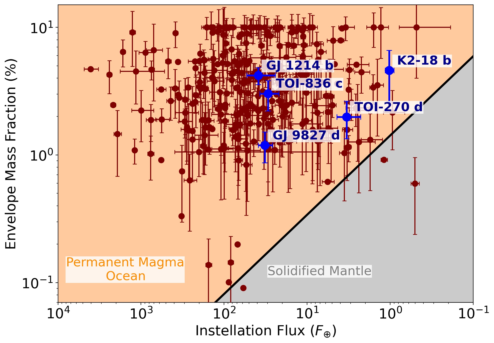

Magma Oceans on Sub-Neptunes
My current work focusses on the thermal evolution of magma oceans on Sub-Neptunes. Most of the rocky planets in the solar system, such as Earth, Mars and Venus, began in a fully molten state. Over time, their surfaces solidified, and they continued to evolve into the worlds we observe today. For Sub-Neptune sized planets, the evolution of magma oceans may differ significantly from that of the Solar System planets because of their massive, hydrogen-dominated atmospheres. Using the PROTEUS modelling framework, we investigate the factors that govern magma ocean evolution on sub-Neptunes, and assess whether some may host permanent magma oceans that never solidify.
